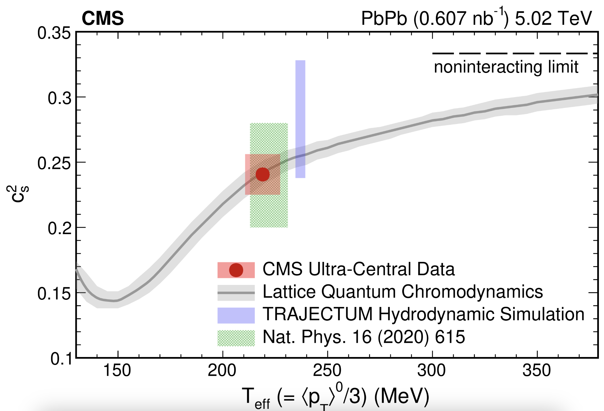

QGP Speed of Sound Published!
June 20, 2024
The speed of sound in a material describes how quickly pressure waves can move through the material, and it depends on the material's microscopic properties. For example, the speed of sound in air (a gas) is around 343 meters per second, but the speed of sound in liquid water is 1500 meters per second.
Today a new measurement performed by a group of CMS Collaboration scientists including myself was published in Reports on Progress in Physics. Using a new technique that exmaines completely head-on lead-lead collisions, which can generate over 10,000 particles, we were able to extract an effective speed of sound in the hot quark-gluon plasma created in these collisions. We found the speed of sound to be nearly 150,000,000 meters per second - 440,000 times faster than the speed of sound in air! Perhaps more importantly, our extracted value of the speed of sound in this exotic form of matter agrees nicely with theoretical calculations. This can be seen by comparing the red data point in the plot below with the gray band. The paper can be read in full here. This research was also featured on the CERN home page, and the write up from CMS regarding the measurement can be found at this location..
